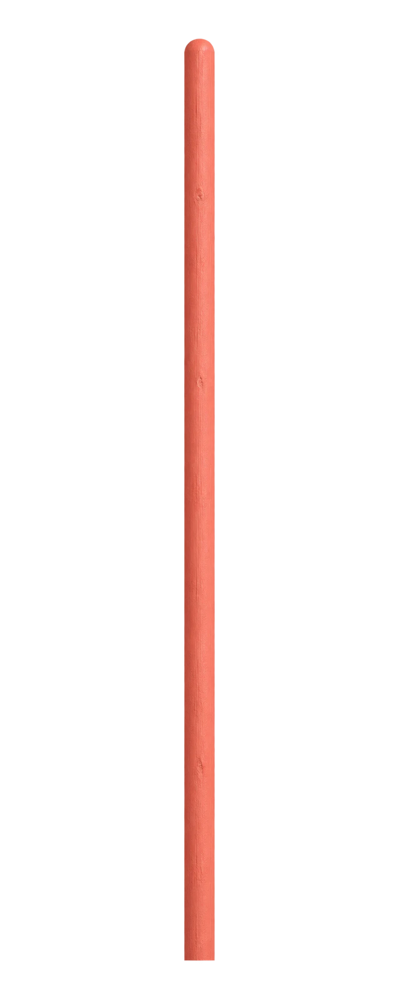

Find your
next small turn.
A paper signpost for supplied fictional destinations. Choose a blade to separate its bearing from its walking distance.
signs prepared
from one origin
A note from Turnleaf
Preparation100%

A direction
is not a distance.
The compass is a north-up bearing diagram. Its arrow length is constant and does not represent a route or walking metres.
Fictional supplied destinations from one named origin. No live venue, route geometry or walking time is inferred.